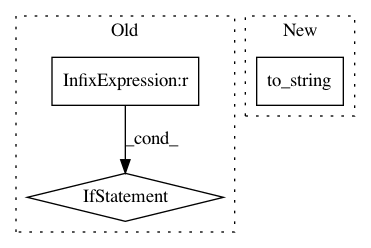

311a6e809bc4932e3e1c44ea59c557c4931b67d7,tensorflow_transform/beam/cached_impl_test.py,CachedImplTest,test_optimize_traversal,#CachedImplTest#Any#Any#Any#Any#,606
Before Change
write_cache_fn, expected_dot_graph_str):
cache_location = self._make_cache_location()
span_0_key, span_1_key = "span-0", "span-1"
if write_cache_fn is not None:
write_cache_fn(cache_location.input_cache_dir, [span_0_key, span_1_key])
with tf.name_scope("inputs"):
input_signature = impl_helper.feature_spec_as_batched_placeholders(
feature_spec)
output_signature = preprocessing_fn(input_signature)
After Change
leaf_nodes = [transform_fn_future] + sorted(
cache_output_dict.values(), key=str)
dot_string = nodes.get_dot_graph(leaf_nodes).to_string()
self.WriteRenderedDotFile(dot_string)
self.assertSameElements(
dot_string.split("\n"),
In pattern: SUPERPATTERN
Frequency: 3
Non-data size: 3
Instances
Project Name: tensorflow/transform
Commit Name: 311a6e809bc4932e3e1c44ea59c557c4931b67d7
Time: 2019-03-13
Author: zoy@google.com
File Name: tensorflow_transform/beam/cached_impl_test.py
Class Name: CachedImplTest
Method Name: test_optimize_traversal
Project Name: dit/dit
Commit Name: 7667fe99a1e5b5d706930ab06020367a3c19538f
Time: 2015-01-27
Author: chebee7i@gmail.com
File Name: dit/algorithms/information_partitions.py
Class Name: ShannonPartition
Method Name: __str__
Project Name: kwgoodman/numerox
Commit Name: 841ea44e30577258ddae735701ef45055abdc3f8
Time: 2018-08-30
Author: kwgoodman@gmail.com
File Name: numerox/prediction.py
Class Name: Prediction
Method Name: __repr__